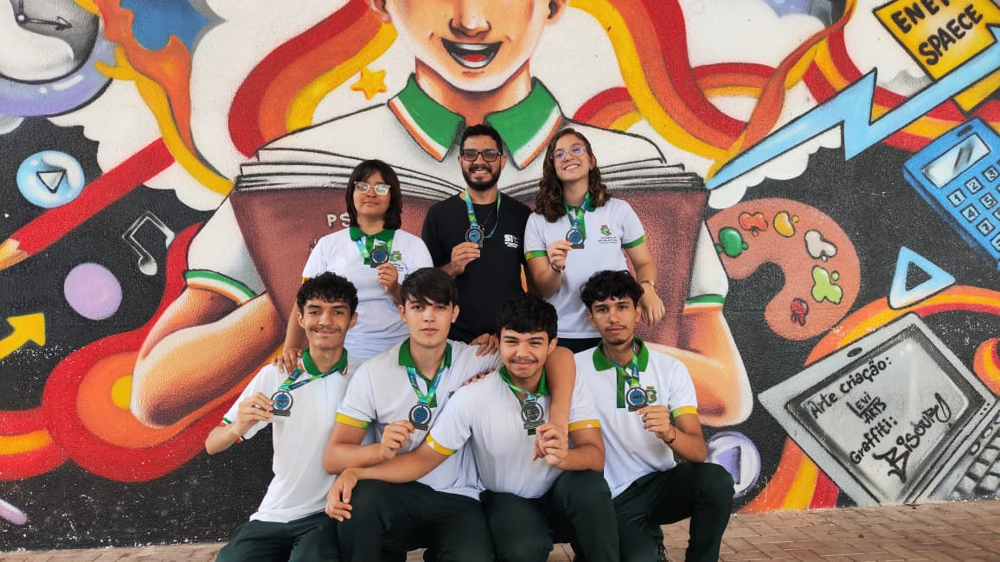
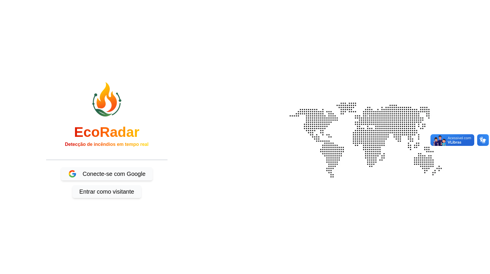
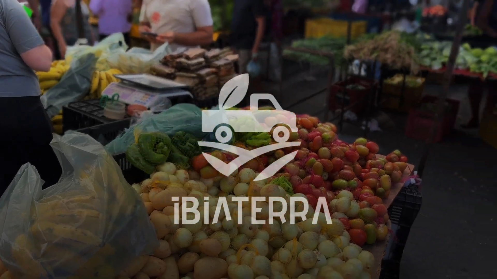
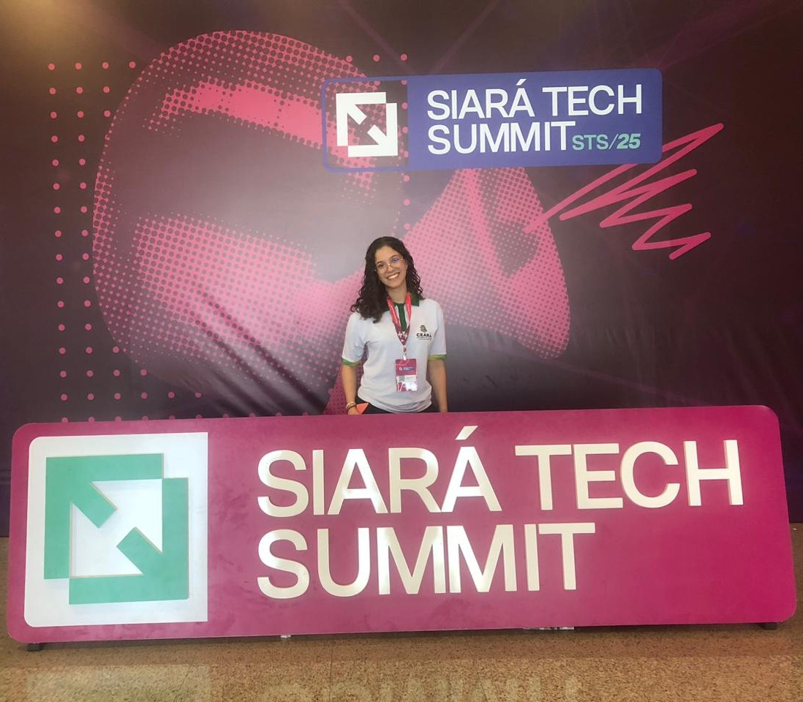
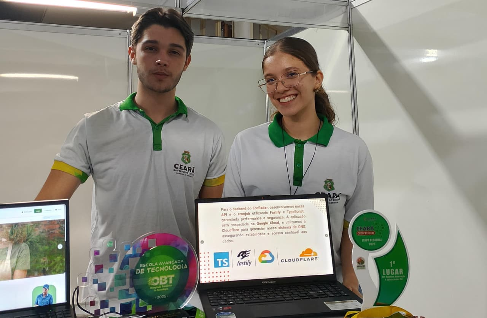
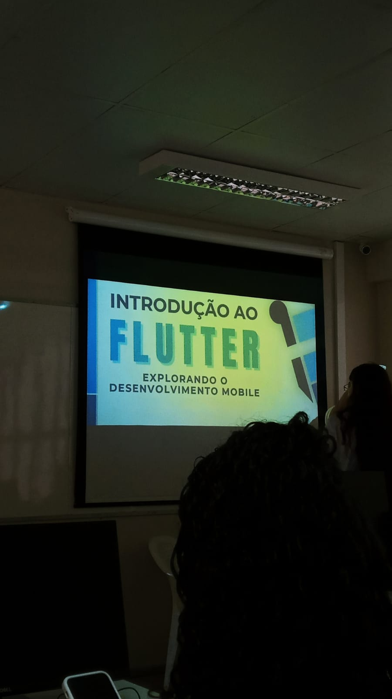

Olá, eu sou a Maira Lopes!
Especialidades
Hard Skills
Utilizo essas tecnologias para transformar ideias em soluções funcionais. Com Python e análise de dados, foco na automação de processos e na extração de insights valiosos. No Front-end, busco criar interfaces responsivas e intuitivas, enquanto no Back-end e Banco de Dados, garanto a estrutura e a segurança necessárias para que cada projeto seja resolvido com eficiência e escalabilidade.
Data & IA
Front-end
Banco de Dados

Olimpíada Brasileira de Tecnologia (OBT) — 1° lugar na Categoria C3
A OBT é uma das principais olimpíadas de tecnologia do Brasil, reunindo escolas de todo o
país. Entre mais de 10 mil participantes, minha equipe conquistou o 1° lugar como melhor
aplicação do evento com o projeto EcoRadar, focado na detecção de incêndios florestais em
tempo real.
Projetos Pessoais em Destaque
Soluções que desenvolvi para solucionar problemas e colocar em prática o que aprendo.
Grandes Projetos
Projetos de maior impacto que ajudei a desenvolver, idealizei ou contribuí de forma significativa — com propósito real e alcance além da sala de aula.


Formações e Certificações
Eventos e Participações



Conexões e Redes
Tianguá, Ceará · Disponível para estágio